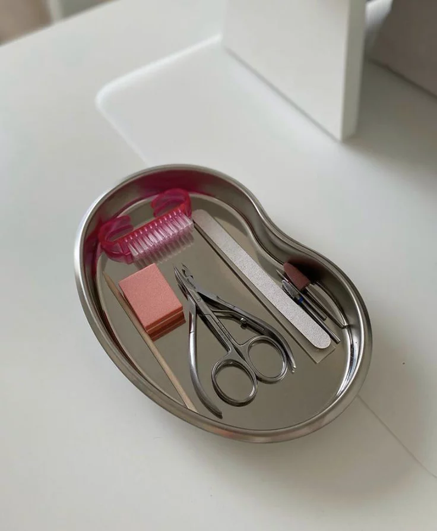

Desinfección de herramientas: Limpia tus limas, empujadores y pinceles con alcohol al 70% antes y después de cada uso.
Higiene de manos: Lava bien tus manos (o las de tu modelo) y aplica un sanitizante para evitar infecciones bajo el producto.
No compartir limas: Las limas de cartón son porosas y acumulan bacterias; lo ideal es que cada persona tenga la suya.
